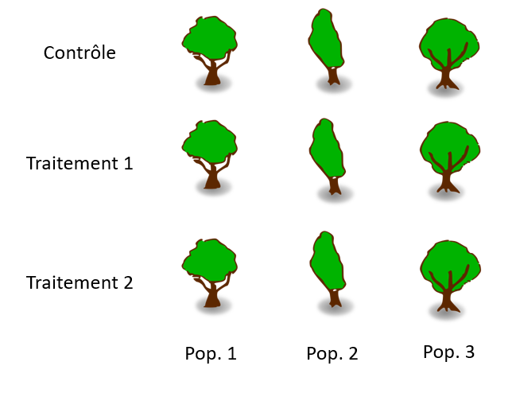
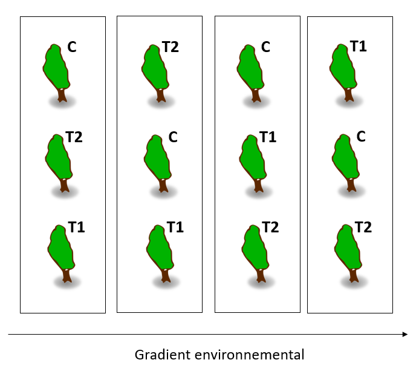
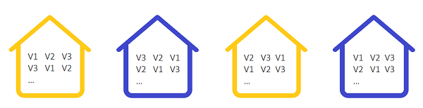

Sampling methods and experiment design
September 3, 2019
Objectives
Choose a sampling method according to the characteristics of the population to be studied.
Describe the advantages and disadvantages of different sampling methods.
Differentiate observational studies and experimental manipulations.
Know the important elements to consider when planning experiments.
Describe the principle and utility of a block experiment.
Sampling methods
Sampling methods define criteria to obtain a sample that is representative of a population for the variable of interest.
Representativeness can be defined as an absence of bias: even if the distribution of values changes from one sample to another, on average, this distribution corresponds to that of the entire population.
In addition, we want an effective sampling method, that is, it allows us to estimate the desired parameters with the greatest precision for a given amount of resources (time, money).
Example
The chaga (Inonutus obliquus) is a mushroom parasite of birch trees found in the boreal forest. Generally consumed as a herbal tea, it is particularly sought after for its high concentration of antioxidants which could provide health benefits.

Imagine you were charged with creating a sampling plan to estimate the abundance of chaga and its commercial harvest potential in a 120 km\(^2\) (12 000 ha) region north-west of Rouyn-Noranda. How would you place your sampling units (plots) in that landscape? You have a map of forest types showing the distribution of stands by dominant species.

Simple random sampling
In simple random sampling, each individual or unit of observation has the same probability of being sampled.
For this type of sampling, the sample mean of the variable is an unbiased estimator of its population mean. (We will discuss these estimation concepts in the next class.)
In our example, we select 20 random points in the study area to locate 50 m x 50 m plots (the sampling unit).

Advantages
This is the simplest method to obtain a representative sample.
It does not require any particular knowledge about the structure of the population.
Disadvantages
By chance, the points of a given sample may be concentrated in a certain part of the population.
As we will see, other methods may be more effective depending on the situation.
Stratified sampling
The population or study area is divided into strata, followed by simple random sampling in each stratum.
For example, instead of choosing to randomly place 20 plots in the study area, 4 could be placed in each of the 5 stand types.
This method is used when we believe that the measured variable varies more between individuals of different strata than between individuals of the same stratum.
Suppose we divide the population into \(m\) strata and calculate the mean of \(x\) for the random sample taken in each stratum. In this case, the estimator for the overall mean of \(x\) is a weighted mean of the means for each stratum.
\[\bar{x} = \sum_{j = 1}^{m} w_j \bar{x}_j\]
In this equations, \(\bar{x}_j\) is the mean of observations in stratum \(j\) and \(w_j\) is the fraction of the population or study area contained in that stratum, which we call the weight of that stratum. For example, if one quarter of the study area is in the first stratum, \(w_1\) = 0.25.
In general, the more the values of \(x\) are homogeneous in each stratum and different between strata, the more efficient stratified sampling will be (greater precision of the mean) compared with simple random sampling for the same total \(n\).
However, this effectiveness also depends on the choice of sample size in each stratum.
Each stratum can be sampled in proportion to its weight \(w_j\) in the population. If the variance is the same in each stratum, this choice maximizes the precision of the estimated mean.
If we know that the variable varies more in certain strata, we can oversample them relative to their weight \(w_j\).
If some strata are more difficult or expensive to sample, it may be necessary to undersample them relative to their weight.
If we are interested not only in the overall mean, but also in the average per stratum, we need a sufficient number of samples in each stratum, so the smallest strata will be oversampled compared to their weight \(w_j\).
Advantages of stratified sampling
More efficient estimation when the distribution of the measured variable differs significantly between strata.
With a sufficiently large sample, we obtain not only a good estimate of the overall mean, but also by stratum.
Disadvantages
This method requires some knowledge of the variation of the variable in the population in order to establish relevant strata.
The result may be biased if the weights used do not correspond to the actual proportions of each stratum in the population.
Systematic sampling
For this method, sampling points are taken at regular intervals in space, on a grid. It is important to choose randomly (as much as possible) the origin of the grid.
In our example, we choose a first random point in a 2 km x 2 km square northwest of the study area, then we place the subsequent points on a grid with 2 km between successive points.

Imagine that the variable of interest is influenced by a spatial gradient, such as a gradual change in temperature, slope, or humidity across the study area. In this case, the values of \(x\) vary more between distant points than between close points. Thus, it is advantageous to spread out the points sufficiently in space, especially along the gradient, to obtain a representative sample of the entire study area.
The principle is similar to stratified sampling, where the points are distributed between strata so that each stratum is well represented. For systematic sampling, the points along the \(x\) and \(y\) axes are distributed so that all portions of the spatial gradient of the study area are well represented.
Advantages
- More efficient than simple random sampling if the variable is influenced by a spatial gradient.
Disadvantages
It is sometimes not practical to place points at regular intervals (e.g. irregularly shaped study area, inaccessible places).
If we want an estimate not only of the mean, but also of the variance of \(x\), then we have to repeat the systematic sampling with another grid (different random origin).
This situation is rare, but if the habitat varies periodically, this type of sampling may be unrepresentative. For example, with a series of hills and valleys, each point could fall into a valley; or in an agricultural landscape, successive points could always be in the middle of the field rather than at the edge.
Cluster and multistage sampling
For a large study area, transportation between sites can be time consuming and costly. In order to reduce costs while maintaining a random sampling of plots, we can use cluster or multistage sampling.
In this method, the population or study area is divided into clusters. We first randomly choose a number of clusters. Then, we can sample all the individuals from the chosen clusters, or more frequently, take a random sample from each chosen cluster (multistage sampling).
In our example, we divide the study area into clusters of 500 x 500 m and choose six randomly. Then we randomly select five 50 x 50 m plots in each of the selected clusters (total of 30 plots).

By reducing the costs and time associated with moving between observation units, this method allows in principle to sample more individuals for the same number of resources.
While \(x\) varies a lot within clusters but has a similar distribution from cluster to cluster, the efficiency of this method approaches that of simple random sampling. However, as we saw earlier, two points close together often have more homogeneous characteristics than two distant points. In this case, cluster (or multistage) sampling is less efficient than other methods.
Advantages
- Reduces the costs associated with sampling, allowing us to increase the sample size for a given budget.
Disadvantages
- Less efficient sampling (less precise estimate) if the study area is heterogeneous. This disadvantage may be partially offset by the increase of \(n\).
Adaptive sampling
If we want to sample a rare species, the methods seen previously may be ineffective due to the absence of the species in most randomly selected plots.
In this case, adaptive cluster sampling can be used. A number of independent plots are first sampled, but when the desired species is detected, sampling is continued with plots adjacent to the one where the species was detected.
Since sampling is concentrated in areas where the species is abundant, a statistical correction must be applied to properly estimate abundance in the entire study area. I have included some articles in the references section for more information on this method.
Other sampling methods
In this class, we have seen some general sampling strategies. Other methods exist to meet the need for specific fields of study.
For example, in animal ecology, individuals are mobile and often difficult to detect. Methods such as site occupancy estimation and capture-mark-recapture have been developed to account for the inability to detect all individuals in a single visit to a site.
Experimental design
While it is not always possible to manipulate the variables of a system in a controlled experiment, it remains the surest way to isolate a cause-and-effect relationship between two variables.
For example, suppose we want to determine the effect of temperature on the growth of black spruce seedlings. We could measure seedling growth along a north-south temperature gradient. However, other important variables will also change along this gradient, including the length of the day. If we try rather to measure the growth of seedlings of the same population in warmer and colder years, our results would be influenced by other variables, such as precipitation, which also vary from year to year.
Thus, experimental manipulation aims to eliminate the effect of other variables that might be confounded with the effect we want to measure.
In this example, a possible experiment would be to grow seedlings from the same population in temperature-controlled chambers, keeping the other variables constant (e.g. light, moisture, soil type). To manipulate the temperature of the air, it is necessary here to create an artificial environment, but other types of experiments can be carried out in a natural environment, as we will see in the next examples.
Exercise
After changing the composition of fertilizer applied to several corn fields in one region, agronomists note that the average yield is significantly higher than last year in the same fields. Do these results convince you that the new fertilizer is superior?
To compare the effect of two soil preparation methods on forest regeneration after logging, you measure average seedling growth in two logging areas, one where method 1 was applied and the other where method 2 was applied. Is it useful to delimit several plots on each area to increase the size of your sample?
Principles of experiment design
In this section, a treatment is an experimental manipulation, for which we want to measure the effect on a response variable. Different treatment options or treatment intensities can be tested in the same experiment (for example, the effect of several soil types, or different soil moisture levels, on growth).
In biology, it is expected that individuals will respond differently to a treatment. Thus, we are generally interested in estimating the average effect of a treatment from the responses measured on a group of individuals. Today, we focus on general principles of experiment design. In the next few weeks, we will discuss statistical methods to estimate the effect of treatments.
The following principles were described from the earliest publications on experimental design (such as R.A. Fisher’s 1935 book The Design of Experiments) and aim to isolate the effect of the studied variable while controlling other sources of variation.
Control group
To ensure that the treatment is the cause of the response observed in the treated individuals, it is necessary to compare this response to that of an untreated control group, placed under the same environmental conditions. Sometimes it is necessary to establish more than one control group.
For example, suppose we want to measure the effect of a herbivore insect on seedling growth and survival in a forest environment. To do this, we cover some of the seedlings with a mesh net small enough to exclude the desired insect. In this case, the treatment is the exclusion of the insect. However, to verify that the net does not itself have an effect on the measured response, two control groups could be defined: one without a net, and the other with a mesh net slightly larger than the insect.
The state of a system before the treatment is rarely a good control, as we saw in part (a) of the exercise above, because the system is affected by other variables that change from one period to the other. If you want to compare a site before and after a treatment, it is better to follow a control site during the same period. This type of plan is known by the acronym BACI ( before-after-control-impact) and is used in particular for studies of the impact of anthropogenic disturbances on ecosystems. In this case, a change in time observed on the disturbed site, but not on the control site, constitutes a better proof of impact.
When treatments serve to compare the effect of different levels of a variable (eg low, medium or high pH), the concept of a control does not apply.
In the following test, we consider the absence of treatment as a treatment; for example, the expression “each treatment” also includes the control.
Random assignment
Simple random sampling, as we saw earlier, gives each individual the same probability of being part of the sample.
In an experimental setting, the random assignment of different treatments (including the absence of treatment) gives each individual the same chance of getting one or the other treatment. As with random sampling, the goal is to eliminate sources of bias.
Ideally, the only source of systematic difference between the two groups should be the treatment applied. If another factor consistently varied between the control and treated groups, the effect of this factor would be confounded with that of the treatment.
In a context of random assignment, it is possible to obtain by chance an association between the treatment and another characteristic of the population; this probability is greater when the sample size is small. Block design (see below) is one way to address this problem for a limited number of confounding factors.
Replication
In principle, random assignment makes it possible to estimate without bias the effect of a treatment for the population where the experiment is carried out. However, in order to check whether the effect is generalized to several sites, it is useful to create several replicates of the experimental design.
If the replicates of a treatment are more similar to each other than those of the other treatments, they cannot be considered independent observations. In ecology, this type of pseudoreplication (see the article on this topic in references) is often due to a proximity of sites in space. For example, in part (b) of the previous exercise, the delineation of several plots on the control site and the treated site does not constitute an independent replication.
Blocking
Random assignment of treatments is intended to ensure that individuals receiving one treatment or another have, on average, similar characteristics. With a large enough sample, we can control the effect of other variables affecting the response, without even knowing what these variables are.
We may also be known in advance that certain characteristics of individuals could influence their response to treatment. In this case, it is better to group the individuals into more homogeneous blocks and randomly assign the various treatments within each block.
For an experiment with a single treatment and a control group, pairs of similar individuals may constitute a block. For example, suppose we want to test the effectiveness of a chemical compound to prevent defoliation of trembling aspen by forest tent caterpillar. In this species, each tree can give birth to several clones. In this case, we can choose pairs of clones and for each pair, apply the treatment to one of the two clones chosen at random. Thus, we eliminate genetic variation as a source of difference that can be confused with the effect of treatment.
Randomized complete block designs
In a randomized complete block design, individuals are divided into blocks and each of the treatments is randomly assigned to an equal number of individuals per block.
Example: We plant maples from different populations in a single plot and want to measure the effect of a change in soil pH on their productivity. We apply three treatments: + pH (T1), - pH (T2), and control (C). Trees in the same population are closer genetically and can share particular adaptations. We therefore define blocks for each original population and randomly assign 1/3 of the individuals in each block to C, 1/3 to T1 and 1/3 to T2, as shown in the following diagram. (For simplicity, only 3 trees are shown by population.)

As mentioned in the replication section, environmental conditions are generally more similar for two points closer together than two points farther apart. In this case, to avoid confounding local environmental conditions with the effect of a treatment, it is advantageous to disperse the treatments in space, especially if there is a known environmental gradient (slope, proximity to water, etc.). In the diagram below, the trees are organized in blocks along the gradient axis.

When the blocks are organized according to a spatial gradient, the individuals in the same block must be close together so that the environmental conditions are homogeneous, but not so close that the treatments “contaminate” adjacent individuals.
We will learn how to analyze data from blocked experimental designs in the class on analysis of variance (ANOVA).
Multi-factor experiment design
So far, we have presented experimental designs where treatments could be considered as different values of a single variable, or factor. The following exercise shows a case where we want to simultaneously measure the effect of two factors.
Exercise
You are responsible for an experiment to determine whether seedling growth of four tree species (red maple, jack pine, balsam fir, and aspen) depends on soil texture (sandy, silty, or clayey). You have the capacity to plant 144 seedlings in 12 plots. Describe a plan for organizing plots in space and treatments (tree species and soil type) in the plots.
Factorial design
For an experiment with several factors, a factorial design consists of assigning each of the possible combinations of treatments. For example, if there are three possible treatments for variable 1 and five for variable 2, the factorial design requires at least 3 x 5 = 15 observation units. Ideally, we would like a multiple of 15 so that each combination of treatments is replicated.
Split-plot design
A split-plot design is a way of organizing a multi-factorial experimental setup when one of the factors is more difficult to control. For example, suppose we want to measure the effect of a change in CO\(_2\) concentration on the photosynthetic activity of different varieties of poplar. Control of the CO_\(2\) concentration requires the isolation of trees in growth chambers. In this case, the difficult-to-control factor is replicated a small number of times (e.g. two low and two high concentration chambers), while the other factor is nested in the first one (e.g. 8 seedlings of each variety arranged randomly in each of the 4 chambers).

We will see how to analyze the data of a split-plot experiment in the mixed models course.
Question: How would you apply a split-plot design in the previous exercise?
References
Adaptive cluster sampling
Smith, D.R., Brown, J.A. et Lo, N.C.H. (2004) Application of Adaptive Sampling to Biological Populations, dans Thompson, W.L. (ed.) Sampling Rare and Elusive Species. Island Press, Washington. pp. 75-122.
Talvitie, M., Leino, O. et Holopainen, M. (2006) Inventory of Sparse Forest Populations Using Adaptive Cluster Sampling. Silva Fennica 40, 101-108.
Experimental design
Hurlbert, S.H. (1984) Pseudoreplication and the Design of Ecological Field Experiments. Ecological Monographs 54, 187-211.